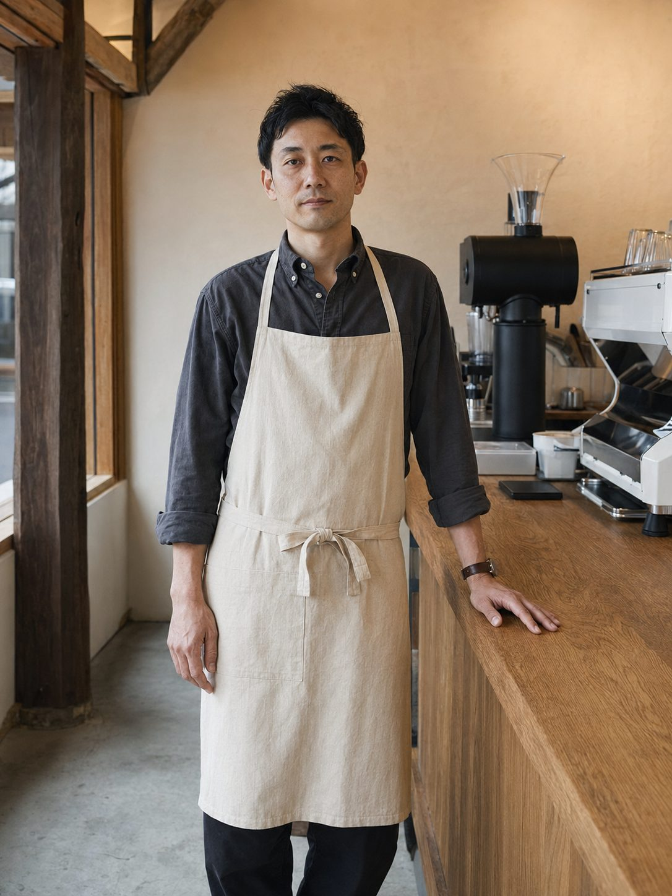
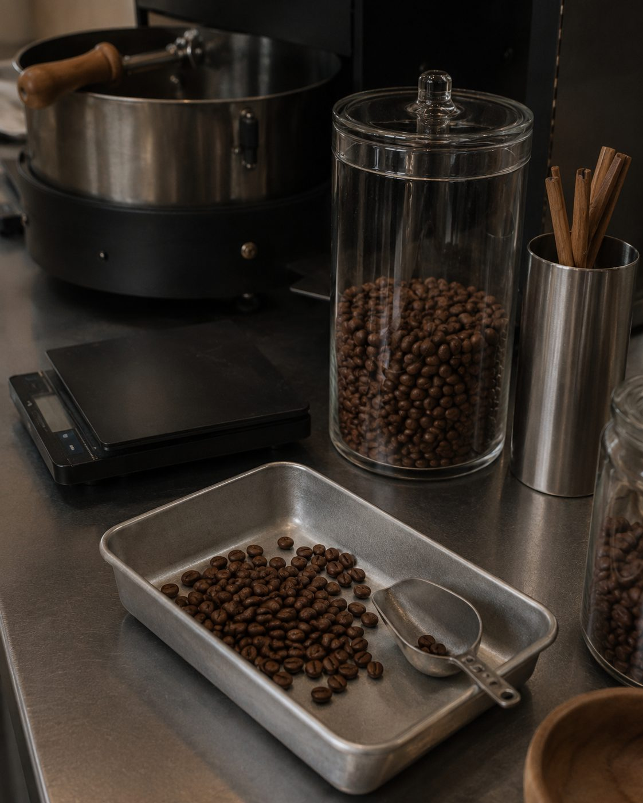

Our Story
豆が持つ味を、
豆が持つ味を、
できるだけ自然なまま届ける。
店主の水瀬直人は、東京都内のスペシャルティコーヒー店で、バリスタとロースターとして約8年間経験を積みました。
多くの珈琲店で働く中で感じたのは、味の良さだけではなく、店で過ごした時間そのものが記憶に残るということでした。
強い個性や派手な演出ではなく、毎日の生活に自然と馴染み、訪れるたびに少し気持ちが整う場所をつくりたい。その思いから、2024年、清澄白河にKASANE COFFEE ROASTERSを開きました。
Founder / Roaster
水瀬 直人 NAOTO MINASE
豆の産地や精製方法に合わせ、甘さと香りが自然に残る焙煎を行っています。専門的な知識を伝えることよりも、その人が自分に合う一杯を見つけられることを大切にしています。

01
豆を選ぶ
産地、品種、精製方法、収穫時期を確認し、季節に合う豆を少量ずつ選びます。
02
焙煎する
豆の個性を隠さないよう、香り、甘さ、余韻のバランスを見ながら焙煎します。
03
抽出する
豆の状態や気温に合わせ、挽き目、湯温、抽出時間を細かく調整します。
04
焼き上げる
焼き菓子は、珈琲とのつながりを考え、甘さを控えて少量ずつ店内で仕込みます。
05
一杯を届ける
専門知識がなくても、気分や好みに合う一杯を選べるようにお手伝いします。